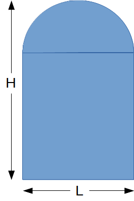
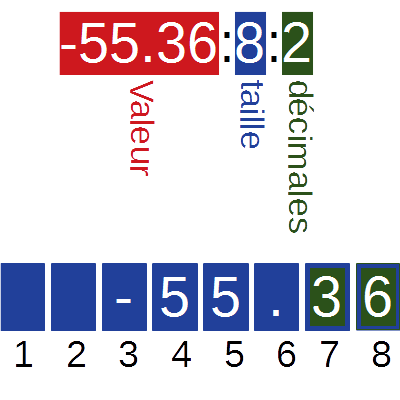

Ecrire un programme qui permet de calculer la quantité de peinture nécessaire pour peindre des portes de la forme suivante, sachant qu'un Kg de peinture permet de peindre une surface moyenne de 6 m².

program prog01;
{ Déclarations }
const
PI = 3.14159265;
QPM2 = 6; { 6 m²/Kg }
var
n : integer;
l, h : real;
sp, qp : real;
begin
{ Entrée des données }
Write('Largeur de la porte : ');
Readln(l);
Write('Hauteur de la porte : ');
Readln(h);
Write('Donner le nbre de portes : ');
Readln(n);
{ Traitements }
sp := (l * (h - l)) + PI * L * L / 4;
qp := (n * 2 * sp) / QPM2;
{ Affichage }
Writeln('Quantité de peinture requise : ', qp:5:1, 'Kg');
Readln;
end.
Un projectile est laissé en chute libre sans vitesse initiale à partir d'un point M haut du sol. On souhaite écrire un programme qui permet de calculer le temps de chute.
A Retenir
Une constante est un objet ayant une valeur fixe tout le long de l'exécution d'un algorithme ou d'un programme.
Une constante est caractérisée par son nom et sa valeur.
Une variable est un objet pouvant prendre différentes valeurs tout le long de l'exécution d'un algorithme ou d'un programme.
Une variable est caractérisée par son nom, son type et son contenu.
Relever les types de données utilisés dans le programme suivant :
program prog02.pas;
{Décalarations}
var
nom : string;
sal : string;
age : integer;
genre : char;
p, h, imc : real;
ok : boolean;
{P.P}
begin
Writeln('Donner votre nom : ');
Readln(nom);
Writeln('Donner votre age : ');
Readln(age);
Writeln('Donner votre genre (G : Garçon, F : Fille) : ');
Readln(genre);
Writeln('Donner votre masse en Kg : ');
Readln(p);
Writeln('Donner votre taille en m : ');
Readln(h);
imc := p / (h * h);
ok := (imc >= 18) and (imc <= 23);
if genre in ['G', 'g'] then sal := 'Mr'
else if genre ['F', 'f'] then sal := 'Mlle/Mme'
else sal := '';
Writeln('Bonjour, ', sal, ' ', nom);
Writeln('Vous aurez bientot ', succ(age), ' ans.');
Writeln('Votre IMC est ', imc:4:1);
if ok then
Writeln('Votre poids est adapté à votre taille!')
else
Writen('Vous devez vous mettre au régime!');
Readln;
end.
A retenir
Le type d'une variable permet de déterminer le domaine de valeurs possible que peut prendre cette variable.
La connaissance du type permet également de :
Le langage Pascal a cinq types entiers prédéfinis. Chaque type a un domaine de définition spécifique.
| Type | Domaine de définition | Taille (bits) |
|---|---|---|
| SHORTINT | -128..127 | 8 bits |
| INTEGER | -32768..32767 | 16 bits |
| LONGINT | -2147483648..2147483647 | 32 bits |
| BYTE | 0..255 | 8 bits |
| WORD | 0..65535 | 16 bits |
Evaluer les expressions arithmétiques suivantes :
Ecrire un programme en pascal qui permet d'afficher les valeurs du tableau suivant :
| 0.0 | -55.36 | 3.14 | 60 10-9 | 1.23 | -38.0 | 5.6 106 |
program prog03; begin Writeln(0.0); Writeln(-55.36); Writeln(3.14); Writeln(60E-9); Writeln(1.23); Writeln(-38.0); Writeln(5.6E6); Readln; end.
Le programme précédent permet d'obtenir le résultat suivant :

Rectifier votre programme pour obtenir l'affichage suivant :

program prog04; begin Writeln(0.0:3:1); Writeln(-55.36:6:2); Writeln(3.14:4:2); Writeln(60E-9:10); Writeln(1.23:4:2); Writeln(-38.0:5:1); Writeln(5.6E6:9); Readln; end.
A retenir
La mise en forme des réels est effectuée de la façon suivante :

3.2E-5 est équivalente à 3,2×10-5
Compléter les tableaux de vérités suivants :
 |
 |
 |
 |
|||||||||||||||||||||||||||||||||||||||||||||||||||
| Fonction NON | Fonction ET | Fonction OU | Fonction XOR | |||||||||||||||||||||||||||||||||||||||||||||||||||
|---|---|---|---|---|---|---|---|---|---|---|---|---|---|---|---|---|---|---|---|---|---|---|---|---|---|---|---|---|---|---|---|---|---|---|---|---|---|---|---|---|---|---|---|---|---|---|---|---|---|---|---|---|---|---|
|
|
|
|
Evaluer les expressions logiques suivantes :
Il s'agit du domaine constitué des caractères alphabétiques et numériques . Une variable de ce type ne peut contenir qu'un seul et unique caractère.
Les caractères sont ordonnés selon leurs code ASCII. En ASCII, il est possible de représenter 256 caractères.
La table suivante contient les 128 premiers caractères standard, code 0 ➞ 127, les caractères de code 128 ➞ 255 ne sont pas standard.

Le tableau suivant résume les principales fonctions prédéfinies sur les caractères :
| Fonction | Pascal | Exemples |
|---|---|---|
| ORD(car) | ORD(car) | ORD("0") ➞ 48 ORD("A") ➞ 65 ORD("a") ➞ 97 |
| CHR(code) | CHR(code) | CHR(48) ➞ "0" CHR(65) ➞ "A" CHR(97) ➞ "a" |
| SUCC(car) | SUCC(car) | SUCC("A") ➞ "B" |
| PRED(car) | PRED(car) | PRED("A") ➞ "@" |
| MAJUS(car) | UPCASE(car) | MAJUS("a") ➞ "A" MAJUS("A") ➞ "A" MAJUS("0") ➞ "0" |
Ecrire un programme qui permet de saisir une lettre Majuscule puis l'affiche en miniscules.
program prog05;
var
cmaj, cmin : char;
begin
Write('Entrer une lettre majuscule : ');
Readln(cmaj);
cmin := Chr(Ord(cmaj) + 32);
Writeln('Miniscule("', cmaj, '") = "', cmin, '"');
Readln;
end.
Une chaîne de caractères est une suite de caractères. Elle peut être définie comme suit :
| Objet | Type/Nature | Rôle |
|---|---|---|
| Prénom | Chaîne [10] | Prénom d’un individu sur 10 caractères maximum |
| Nom | Chaîne | Chaîne pouvant contenir jusqu'à 255 caractères. |
Décalrer les variables du tableau ci-dessus en Pascal.
var Prenom: string[10]; Nom: string;
La figure suivante explique comment accéder aux caractères d'une chaîne.